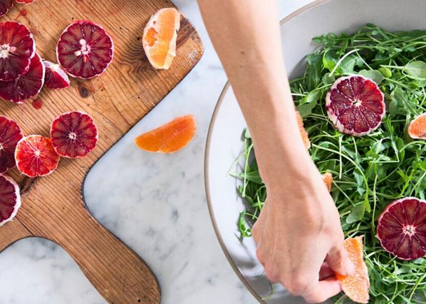

Winter Citrus Salad from Urban Remedy

The Recipe
Thanks to our friends at Urban Remedy(link is external) for sharing this
recipe with us! They note that this salad takes just minutes to make and,
thanks to its combination of pomelo, cara cara orange, and blood orange,
contains your daily dose of immunity-boosting Vitamin C. Citrus fruits are
packed with potassium to regulate blood pressure, and fiber to aid in
healthy digestion.
Ingredients
- 1 clove garlic, minced
- Pinch sea salt
- 3 tablespoons apple cider vinegar
- 6 tablespoons olive oil
- 1 pomelo
- 2 blood oranges
- 2 Cara Cara oranges
- 1 small onion
- 1 bag baby arugula or other salad green
Instructions
-
Mash the garlic and salt together in a bowl. Add olive oil and stir into
a paste. Add apple cider vinegar and stir again. Set aside.
-
Peel all the citrus and remove as much of the pith as you can. Cut blood
oranges into thin round slices, then segment the cara cara oranges and pomelo
cutting away as much of the membraneas you can so they look like clean half-moons.
Slice the red onion into thin ribbons.
-
Place the greens in a large bowl and add the citrus. Sprinkle the red onion on top
and drizzle the dressing over the salad. Dig in!